<title>JATIN, Unchained</title>
<meta name="claude:viewport-fit-sides" content="cover">
<link rel="preconnect" href="https://fonts.googleapis.com">
<link rel="stylesheet" href="https://fonts.googleapis.com/css2?family=IBM+Plex+Mono:wght@400;500;600&family=IBM+Plex+Sans:ital,wght@0,400;0,500;0,700;1,400&family=IBM+Plex+Serif:ital,wght@1,400;1,500&display=swap">
<style>
/* Layout: a plain long read. One text column (~66ch), figures allowed wider.
   His note on part one: keep the design simple, no website styling. So the
   story carries it: big quotes in his words, before/after pairs, one accent. */
:root{
  --bg:#ffffff; --fg:#18171c; --muted:#66636f; --line:#e6e3ea; --soft:#f6f4f8;
  --accent:#b3125f; --accent-soft:#fbe8f1;
  --body:"IBM Plex Sans",system-ui,-apple-system,"Segoe UI",sans-serif;
  --quote:"IBM Plex Serif",Georgia,"Times New Roman",serif;
  --mono:"IBM Plex Mono",ui-monospace,"SF Mono",Menlo,monospace;
}
@media (prefers-color-scheme:dark){:root:not([data-theme="light"]){
  --bg:#131216; --fg:#ecebef; --muted:#9d99a6; --line:#2b2930; --soft:#1c1a20;
  --accent:#ff6aa9; --accent-soft:#2c1622; color-scheme:dark}}
:root[data-theme="dark"]{
  --bg:#131216; --fg:#ecebef; --muted:#9d99a6; --line:#2b2930; --soft:#1c1a20;
  --accent:#ff6aa9; --accent-soft:#2c1622; color-scheme:dark}

*{box-sizing:border-box}
html{scroll-behavior:smooth}
@media (prefers-reduced-motion:reduce){html{scroll-behavior:auto}}
body{background:var(--bg);color:var(--fg);font:17px/1.7 var(--body);
  padding-left:max(16px,env(safe-area-inset-left,0px));padding-right:max(16px,env(safe-area-inset-right,0px));
  padding-block:0 64px}
a{color:var(--accent);text-underline-offset:3px}
a:focus-visible{outline:2px solid var(--accent);outline-offset:3px;border-radius:2px}

.col{max-width:680px;margin-inline:auto}
.wide{max-width:1080px;margin-inline:auto}

h1,h2,h3{text-wrap:balance;margin:0}
p{margin:0}
.stack{display:flex;flex-direction:column;gap:20px}

/* hero */
.hero{padding-block:64px 32px}
.eyebrow{font:500 12px/1.4 var(--mono);letter-spacing:.12em;text-transform:uppercase;color:var(--muted)}
.hero h1{font:700 clamp(44px,8vw,84px)/1 var(--body);letter-spacing:-.025em;margin-top:18px}
.hero h1 em{font-style:normal;color:var(--accent)}
.lede{font-size:20px;line-height:1.6;color:var(--fg);margin-top:22px;max-width:620px}
.byline{font:13px/1.5 var(--mono);color:var(--muted);margin-top:22px}

/* figures */
figure{margin:0}
figure img{display:block;width:100%;height:auto;border-radius:6px;background:var(--soft)}
figcaption{font:13px/1.55 var(--mono);color:var(--muted);margin-top:10px}
figcaption b{color:var(--fg);font-weight:600}
.pair,.trio{display:grid;gap:14px}
.pair{grid-template-columns:repeat(2,minmax(0,1fr))}
.trio{grid-template-columns:repeat(3,minmax(0,1fr))}
@media (max-width:700px){.pair,.trio{grid-template-columns:minmax(0,1fr)}}
.tag{display:inline-block;font:600 11px/1 var(--mono);letter-spacing:.1em;text-transform:uppercase;
  padding:4px 7px;border-radius:3px;background:var(--soft);color:var(--muted);margin-right:6px}
.tag.now{background:var(--accent);color:var(--bg)}

/* numbers */
.nums{display:grid;grid-template-columns:repeat(auto-fit,minmax(130px,1fr));gap:1px;background:var(--line);
  border:1px solid var(--line);border-radius:8px;overflow:hidden;margin-block:36px 8px}
.nums div{background:var(--bg);padding:16px 16px 14px}
.nums b{display:block;font:700 30px/1.1 var(--body);font-variant-numeric:tabular-nums;letter-spacing:-.02em}
.nums span{font:12px/1.4 var(--mono);color:var(--muted)}

/* contents */
.toc{display:flex;flex-wrap:wrap;gap:8px 18px;font:13px/1.5 var(--mono);padding-block:18px;
  border-block:1px solid var(--line);margin-top:40px}
.toc a{color:var(--muted);text-decoration:none}
.toc a:hover{color:var(--accent)}

/* chapters */
section{padding-top:84px}
.ch{font:500 12px/1 var(--mono);letter-spacing:.14em;text-transform:uppercase;color:var(--accent)}
section h2{font:700 clamp(30px,4.6vw,44px)/1.1 var(--body);letter-spacing:-.02em;margin-top:12px}
section h3{font:700 20px/1.3 var(--body);margin-top:12px}
.section-body{margin-top:24px}

/* his words */
.said{font:italic 400 clamp(24px,3.4vw,32px)/1.35 var(--quote);color:var(--fg);
  border-left:3px solid var(--accent);padding:4px 0 4px 22px;margin-block:12px}
.said cite{display:block;font:13px/1.4 var(--mono);font-style:normal;color:var(--muted);margin-top:12px}
q{font-family:var(--quote);font-style:italic;quotes:"“" "”"}

/* the chain list */
.breaks{list-style:none;margin:8px 0 0;padding:0;counter-reset:b;display:flex;flex-direction:column;gap:44px}
.breaks li{display:grid;grid-template-columns:minmax(0,1fr) minmax(0,1.15fr);gap:24px;align-items:start}
@media (max-width:760px){.breaks li{grid-template-columns:minmax(0,1fr)}}
.breaks .where{font:600 12px/1 var(--mono);letter-spacing:.12em;text-transform:uppercase;color:var(--accent)}
.breaks h3{margin-top:8px}
.breaks p{margin-top:10px}

/* callout */
.why{background:var(--accent-soft);border-radius:8px;padding:22px 24px;display:flex;flex-direction:column;gap:14px}
.why h3{margin:0;font-size:17px;letter-spacing:.01em}

/* cut table */
.tbl{overflow-x:auto;border:1px solid var(--line);border-radius:8px}
table{border-collapse:collapse;width:100%;min-width:620px;font-size:15px;line-height:1.5}
th,td{text-align:left;vertical-align:top;padding:12px 14px;border-bottom:1px solid var(--line)}
th{font:600 11px/1.3 var(--mono);letter-spacing:.1em;text-transform:uppercase;color:var(--muted);background:var(--soft)}
tr:last-child td{border-bottom:0}
td:first-child{font-weight:600;width:24%}
td:nth-child(2){font-family:var(--quote);font-style:italic;width:38%}

/* habits */
.habits{display:grid;grid-template-columns:repeat(2,minmax(0,1fr));gap:14px}
@media (max-width:700px){.habits{grid-template-columns:minmax(0,1fr)}}
.habit{border:1px solid var(--line);border-radius:8px;padding:18px 20px;display:flex;flex-direction:column;gap:8px}
.habit h3{margin:0;font-size:17px}
.habit p{font-size:15.5px;line-height:1.6;color:var(--fg)}
.habit .ex{font:13px/1.5 var(--mono);color:var(--muted)}

/* before/after lines */
.lines{display:flex;flex-direction:column;gap:14px}
.line{display:grid;grid-template-columns:minmax(0,1fr) minmax(0,1fr);gap:14px}
@media (max-width:700px){.line{grid-template-columns:minmax(0,1fr)}}
.line div{border-radius:6px;padding:12px 14px;font-size:15px;line-height:1.55}
.line .was{background:var(--soft);color:var(--muted);text-decoration:line-through;text-decoration-color:var(--muted)}
.line .is{background:var(--accent-soft)}
.line small{display:block;font:600 11px/1.3 var(--mono);letter-spacing:.1em;text-transform:uppercase;margin-bottom:6px;text-decoration:none}

.end{margin-top:96px;padding-top:40px;border-top:1px solid var(--line);text-align:left}
.end .said{border:0;padding:0;font-size:clamp(28px,4.4vw,40px)}
.foot{font:13px/1.6 var(--mono);color:var(--muted);margin-top:28px}
</style>

<header class="hero">
  <div class="col">
    <div class="eyebrow">The making of justjatin.thotahub.in · Aug – Nov 2026</div>
    <h1>JATIN, <em>unchained</em></h1>
    <p class="lede">How a photographer, editor and director from India built his portfolio as a game, and why everything in it starts out chained.</p>
    <p class="byline">Told from his notes, in his words, across 16 days of building. Quotes are his, tidied for spelling only.</p>
  </div>
  <div class="wide" style="margin-top:36px">
    <figure>
      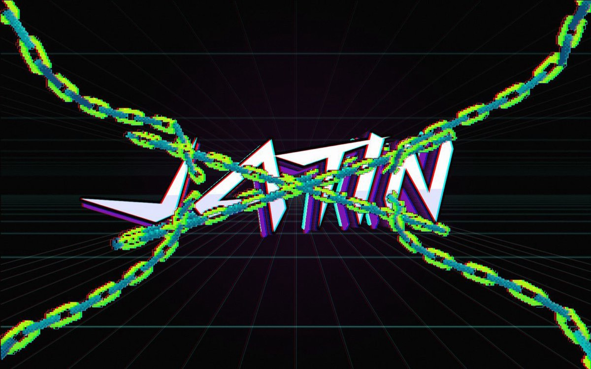
      <figcaption><b>The first thing you see.</b> His name, chained at four corners, floating in zero gravity until you press a key.</figcaption>
    </figure>
  </div>
  <div class="col">
    <div class="nums">
      <div><b>16</b><span>days, first commit to today</span></div>
      <div><b>138</b><span>saved steps (commits)</span></div>
      <div><b>316</b><span>snapshot sets of work in progress</span></div>
      <div><b>27</b><span>rounds on the flip phone alone</span></div>
      <div><b>1</b><span>file. No framework, no 3D library</span></div>
    </div>
    <nav class="toc" aria-label="Chapters">
      <a href="#who">Who</a><a href="#idea">The idea</a><a href="#chain">The chain</a><a href="#timing">Timing</a><a href="#cut">What he cut</a><a href="#objects">Objects</a><a href="#his">His own material</a><a href="#how">How he works</a><a href="#visitor">The visitor</a><a href="#now">Where it stands</a>
    </nav>
  </div>
</header>

<main>
  <section id="who" class="col">
    <div class="ch">Chapter 1</div>
    <h2>Who it's about</h2>
    <div class="section-body stack">
      <p>Jatin shoots, edits and directs. He cuts in DaVinci Resolve and builds his own tools inside Fusion. He gives notes the way an editor does: <q>too slow</q>, <q>hits too soft</q>, <q>it should hold longer</q>. He isn't a developer, and he didn't want a developer's website.</p>
      <p>Late in the build, he pointed at the description on the ABOUT page and said it was the context for the whole site, and that anything that didn't match it should change. This is what it says:</p>
      <blockquote class="said">Photographer, editor, director from India, and I never stop experimenting. I'd rather burn out chasing what I love than fade away doing what I don't.<cite>The ABOUT plate, 8 Nov 2026</cite></blockquote>
      <p>That second line is the brief for everything else in this document. Nothing on the site sits still for the sake of it, every screen starts held back, and you are the one who lets it loose.</p>
    </div>
  </section>

  <section id="idea" class="col">
    <div class="ch">Chapter 2</div>
    <h2>Don't make a website</h2>
    <div class="section-body stack">
      <p>The idea was there before any code. In August he had two things he loved and wanted merged on purpose.</p>
      <p><b>His own JATIN logo animation</b> gave the look: acid yellow, cyan, magenta, purple, green and pink on pure black, shards bursting from the centre, a fine halftone print, a chromatic glitch on the type. <b>A Persona 5 Royal game menu</b> gave the behaviour: one screen, items you pick, sections that slam open over it.</p>
    </div>
  </section>
  <div class="wide" style="margin-top:28px">
    <div class="pair">
      <figure><figcaption><span class="tag">Reference</span>His logo animation. The whole palette and the shard geometry come from here.</figcaption></figure>
      <figure>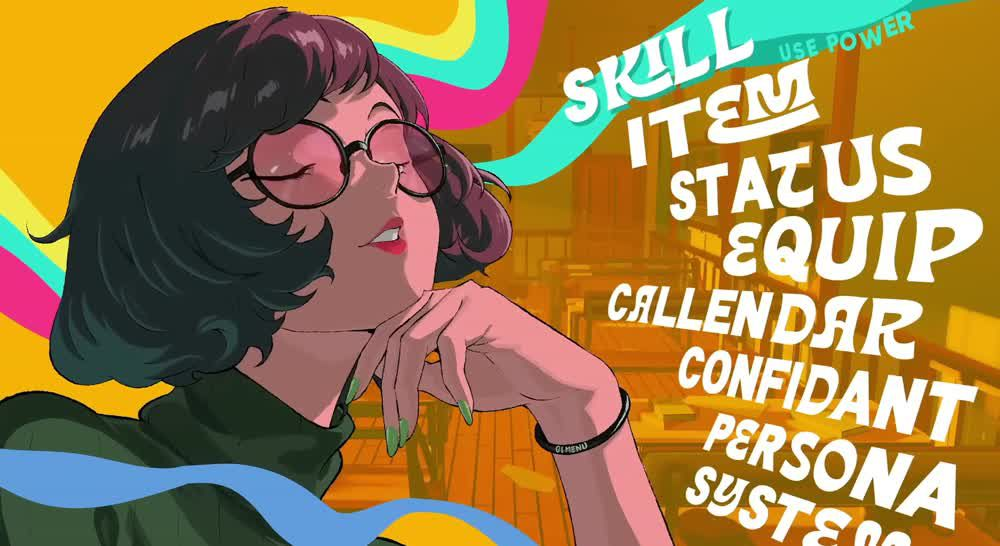<figcaption><span class="tag">Reference</span>Persona 5 Royal's menu. The model for how you move around.</figcaption></figure>
    </div>
  </div>
  <div class="col section-body stack">
    <p>So the site doesn't scroll. It opens like a game: a title sequence, then a menu, then screens that slam open over it. For an editor that's the natural shape. The first impression is a cut, and the visitor's first job is to press something.</p>
    <p>Why it works: a scrolling portfolio asks you to read. A menu asks you to choose. Choosing is more fun, and every choice gets an answer on screen: the plate floods with colour, the whole world re-tints, a burst rips through the frame.</p>
  </div>
  <div class="wide" style="margin-top:28px">
    <div class="pair">
      <figure>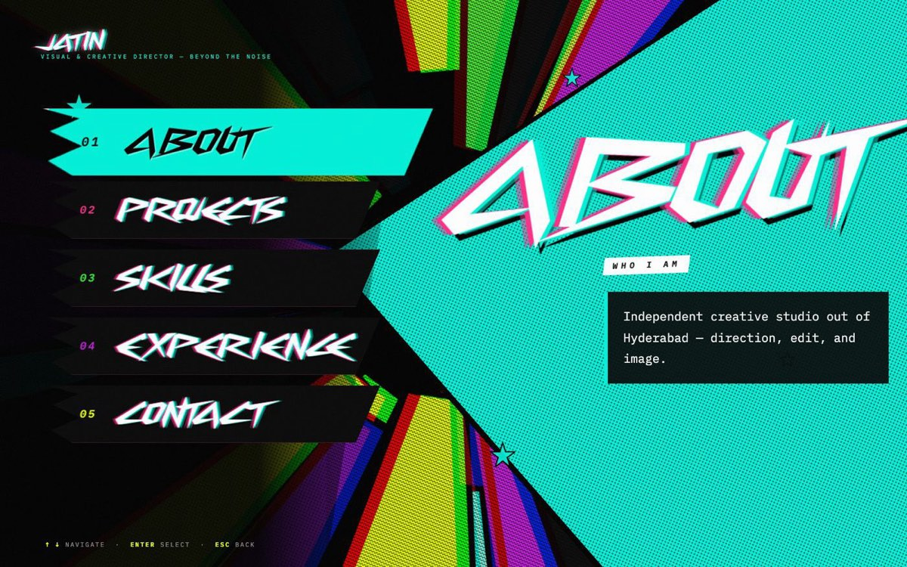<figcaption><span class="tag">24 Oct</span>The first draft. Five items and the giant wedge. He called it the foundation, and the wedge survives to today.</figcaption></figure>
      <figure>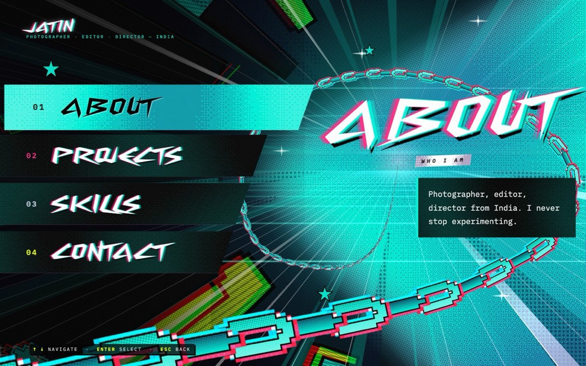<figcaption><span class="tag now">Now</span>Four plates in a staircase from his sketch, a wedge that fills itself to fit, and the chain coming out of the light.</figcaption></figure>
    </div>
  </div>

  <section id="chain" class="col">
    <div class="ch">Chapter 3</div>
    <h2>The chain: every screen starts held back</h2>
    <div class="section-body stack">
      <p>This is the idea that ties the whole site together, and it's his. Chains and breaking out are a metaphor for breaking his own limits. Once it appeared in the intro, he brought it back on every screen. Each one arrives held, strains, and breaks loose, and in almost every case it's your click that breaks it.</p>
    </div>
  </section>
  <div class="wide" style="margin-top:36px">
    <ol class="breaks">
      <li>
        <figure><figcaption>The snap. White flash, shockwave, links flung at the lens.</figcaption></figure>
        <div>
          <div class="where">Intro</div>
          <h3>His name, in zero gravity</h3>
          <p>JATIN floats in the dark with slack chains drifting around it, pinned at the four corners. It waits there, under a small blinking line: CLICK ANY BUTTON.</p>
          <p>Your press is the yank. The slack goes in a single frame, the word jolts square with a thud, it strains and trembles, and then the chains snap. The snap is the first frame of the explosion that follows. He asked for it like a game: <q>keep it floating until the user clicks any button.</q></p>
        </div>
      </li>
      <li>
        <figure>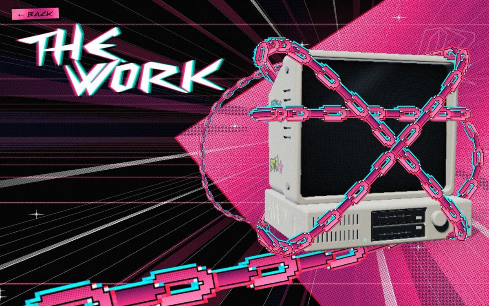<figcaption>PROJECTS: the computer arrives wrapped in three loops of chain.</figcaption></figure>
        <div>
          <div class="where">Projects</div>
          <h3>The work is locked inside a machine</h3>
          <p>A beige retro computer rises out of the floor, wrapped in a band and an X of chain. It squeezes for a moment and then breaks out with a full-page flash, a shockwave and links flying past you. He asked for it <q>more aggressive, with motion and a flash.</q></p>
          <p>Then the screen boots and says CLICK ME!! Click, and the camera dives into the glass, where his photos and films live.</p>
        </div>
      </li>
      <li>
        <figure>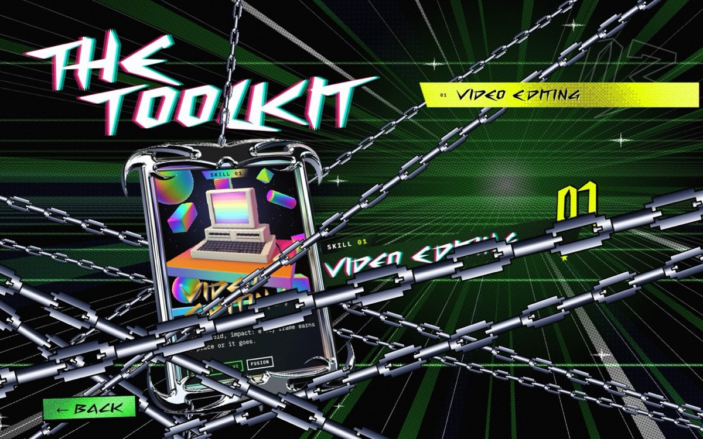<figcaption>SKILLS: the card held in chains, a beat before the bolt hits.</figcaption></figure>
        <div>
          <div class="where">Skills</div>
          <h3>A break needs a cause</h3>
          <p>The first version had the card's chains fall away on their own. His note: <q>the chains just break out of nowhere, but in the reference you can see that the chains break because of the red stripe.</q></p>
          <p>So it was rebuilt with a cause. There's a dead-still hold, a bolt tears in, and the chains break because something hit them. A break with no cause is just an effect. Here something does it.</p>
        </div>
      </li>
      <li>
        <figure>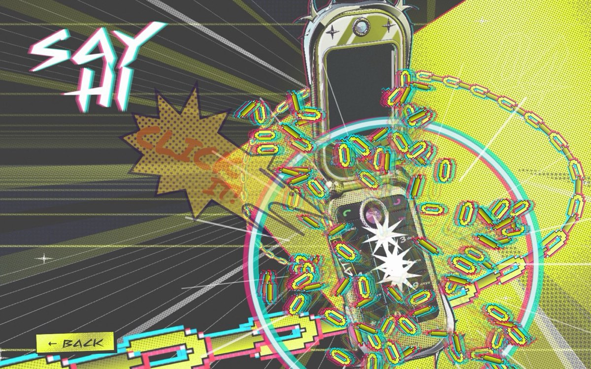<figcaption>CONTACT: you click, the lid flips open and the chains blow apart.</figcaption></figure>
        <div>
          <div class="where">Contact</div>
          <h3>The phone rings until you pick up</h3>
          <p>A flip phone arrives chained shut and ringing, with a comic CLICK IT! beside it. When he saw the first version he corrected how the break should happen: <q>it breaks open from the flip phone opening.</q> The lid is what bursts the chains.</p>
          <p>Then it buzzes like a text, CLICK AGAIN!, and it comes up close to ask what you want to make together.</p>
        </div>
      </li>
      <li>
        <figure>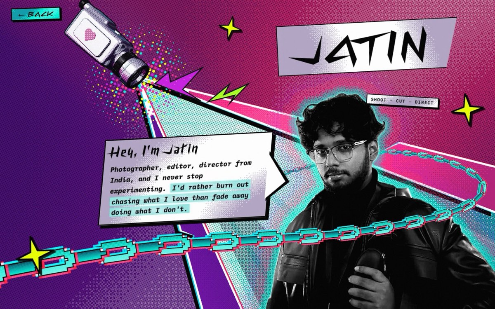<figcaption>ABOUT: the chain runs behind his head and across in front of him, never stopping.</figcaption></figure>
        <div>
          <div class="where">Menu and About</div>
          <h3>After the break, the chain keeps moving</h3>
          <p>On the menu one endless chain scrolls along a path he drew. He didn't like that it seemed to come <q>out of nowhere</q>, so now it comes out of the light at the vanishing point, tiny and far, and grows toward you until it runs off the bottom of the frame.</p>
          <p>On ABOUT the same chain loops behind him and past him. Once he's broken out, the chain stops holding anything and turns into motion.</p>
        </div>
      </li>
    </ol>
  </div>
  <div class="col section-body stack" style="margin-top:44px">
    <div class="why">
      <h3>Why it works</h3>
      <p><b>Tension gives the release its meaning.</b> His first opening was random sparks on a HUD, and he rejected it as <q>empty and random, no intention.</q> A break only lands if you've watched something held first. The chain gave the intro a reason to exist.</p>
      <p><b>The contrast is the beat.</b> He asked for the float to be slower because it felt <q>a bit too flowy</q>, so the one-frame yank would hit harder. Slow, then sudden. That gap is where the impact lives.</p>
      <p><b>The visitor is the cause.</b> Nothing breaks until you press. Most portfolios ask you to watch. This one makes you the reason he gets free, every time you arrive.</p>
      <p><b>The name survives the break.</b> An early version let JATIN disappear when the chains snapped. His note: <q>after the break I don't want the name to disappear, continue with the chaos.</q> Breaking out doesn't erase who you are. The name takes the hit and stays.</p>
    </div>
  </div>

  <section id="timing" class="col">
    <div class="ch">Chapter 4</div>
    <h2>Timing is the deliverable</h2>
    <div class="section-body stack">
      <p>He's a motion person, so the motion got the most notes. He judges it the way he'd judge a cut: by feel, frame by frame, and he keeps going until it lands.</p>
      <p>The intro runs on a 24fps clock and every shape is redrawn on twos, holding each drawing for two frames, the way hand-drawn animation does. That stepped rhythm is what makes it hit like impact frames instead of sliding like a tween.</p>
      <p>The explosion after the snap is a good example of how he decides. It was tried at 2.5 seconds, then 2.0, then 1.5, then back to 2.5, and finally:</p>
      <blockquote class="said">Let's actually keep it at 1.85 seconds. The sweet spot.<cite>On the intro's burst, after trying four lengths</cite></blockquote>
      <p>The same instinct runs through every note on motion:</p>
    </div>
    <div class="lines" style="margin-top:24px">
      <div class="line"><div class="was"><small>His note</small>the pull needs more weight</div><div class="is"><small>What changed</small>A damped thud rings through the camera, the word and the chains once they go taut.</div></div>
      <div class="line"><div class="was"><small>His note</small>it's just flicker</div><div class="is"><small>What changed</small>The handycam throws a real beam of light that spreads into the projection.</div></div>
      <div class="line"><div class="was"><small>His note</small>there is a small gap when the beam comes out</div><div class="is"><small>What changed</small>No hold between the beam and the spread. It opens on the same frame.</div></div>
      <div class="line"><div class="was"><small>His note</small>too clunky, I don't want it opening in a snap</div><div class="is"><small>What changed</small>The camera on the PHOTOGRAPHY card glides open in one quick, smooth move.</div></div>
      <div class="line"><div class="was"><small>His note</small>just a slide</div><div class="is"><small>What changed</small>Screen changes became the intro in miniature: outlines whip in, one white frame, fills slam, it all retracts the way it came. Half a second.</div></div>
    </div>
  </section>
  <div class="wide" style="margin-top:28px">
    <div class="pair">
      <figure>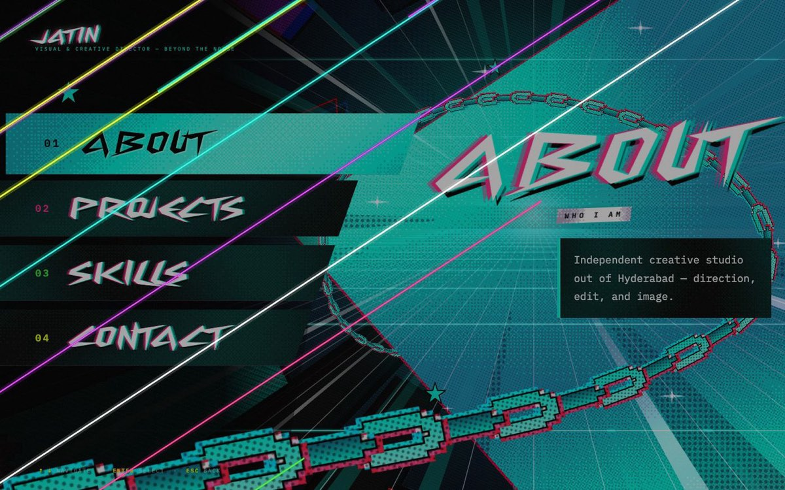<figcaption><span class="tag">0–190ms</span>The transition's trace: outlines whip in along their own axis.</figcaption></figure>
      <figure><figcaption><span class="tag">214–240ms</span>The slam. The screen swaps behind it at 240ms.</figcaption></figure>
    </div>
  </div>

  <section id="cut" class="col">
    <div class="ch">Chapter 5</div>
    <h2>Taste by subtraction</h2>
    <div class="section-body stack">
      <p>A lot of the look came from taking things away. Each line below is something that was built, looked at, and cut on his note. Each cut left a rule behind, and the rules add up to a philosophy: <b>nothing moves unless you do, and nothing is there just to fill space.</b></p>
    </div>
    <div class="tbl" style="margin-top:24px">
      <table>
        <thead><tr><th>What went</th><th>His words</th><th>The rule it left</th></tr></thead>
        <tbody>
          <tr><td>Idle glitch and grain jumps</td><td>looks like a problem with a TV</td><td>The glitch is static. The only glitch that moves fires when you select something.</td></tr>
          <tr><td>The vignette</td><td>removed, explicitly</td><td>The frame stays bright to the edges, like his video. Never darkened.</td></tr>
          <tr><td>Big halftone dots</td><td>some pattern</td><td>Small ink dots at an angle that feel printed in, never a visible grid.</td></tr>
          <tr><td>Background following the cursor</td><td>the whole website's background is reacting to the cursor, I don't want that</td><td>The world holds still. Only the art on a card or a model reacts to you.</td></tr>
          <tr><td>A chain fading in and out</td><td>slowly come out transparency</td><td>Nothing fades. Things come out of the light or run off the frame.</td></tr>
          <tr><td>A soft purple backlight</td><td>I don't want the weird purple gradient backlight</td><td>Hard edges and black behind. No soft glows to prop things up.</td></tr>
          <tr><td>The EXIT button</td><td>remove exit altogether and let the back button exit, that's better and simple</td><td>One way out. BACK always does the same thing.</td></tr>
          <tr><td>Slogans on the skill cards</td><td>too cheesy</td><td>First person and plain, in his voice.</td></tr>
        </tbody>
      </table>
    </div>
  </section>

  <section id="objects" class="col">
    <div class="ch">Chapter 6</div>
    <h2>Every screen is an object you can hold</h2>
    <div class="section-body stack">
      <p>None of the sections is a page of text. Each one is a thing: a beige computer you switch on, a handycam that projects him, a chrome trading card you flip, a flip phone that rings. They all come from his references and from his corner of the world: CRTs, floppy drives, Y2K phones, camcorders.</p>
      <p>Why it works: his work isn't a grid of thumbnails, it's something you walk up to and turn on. The objects make you curious enough to click, and clicking is how you reach the work.</p>
      <p>Every one of them is built inside the single page file with no 3D library, so the whole site can be handed to any host and just work. The computer, the phone and the camera are each drawn by one shader, like a tiny renderer written for that one object.</p>
    </div>
  </section>
  <div class="wide" style="margin-top:28px">
    <div class="pair">
      <figure>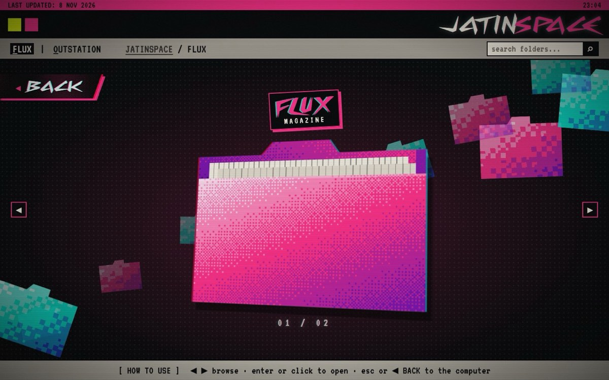<figcaption><b>JATIN OS.</b> Inside the computer: his folders, his photos and films, on an old-web desktop he can keep adding to.</figcaption></figure>
      <figure>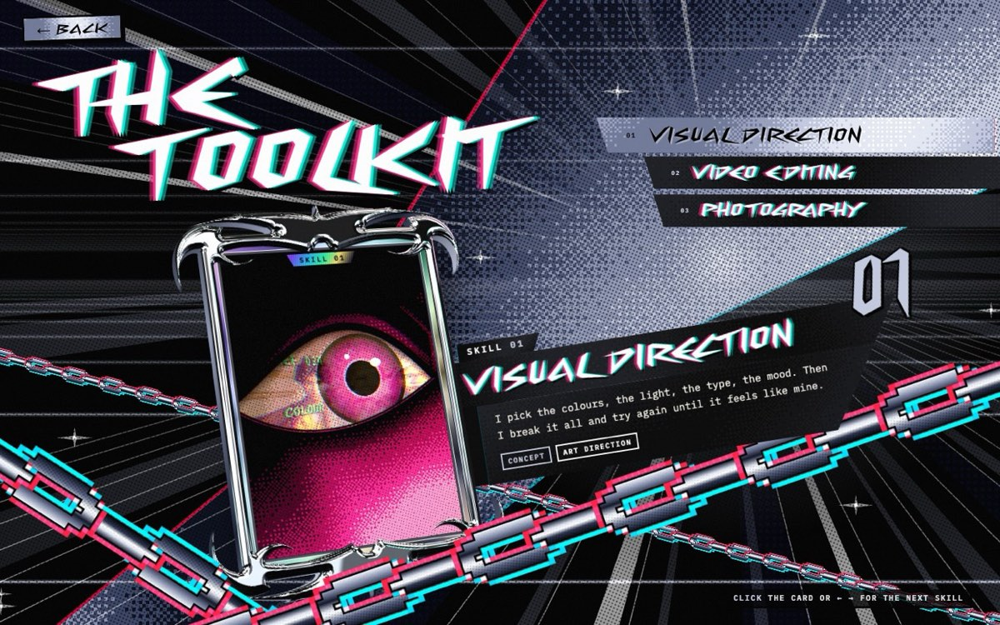<figcaption><b>The skill deck.</b> VISUAL DIRECTION is an eye, because <q>visual direction has everything to do with having an eye for things.</q> Its reflection flicks through his own photos.</figcaption></figure>
    </div>
  </div>
  <div class="col section-body stack" style="margin-top:44px">
    <h3>The phone, in 27 rounds</h3>
    <p>The flip phone shows how far he'll push one object. Round one was a plain silver clamshell. He called it <q>poorly modeled … plain, no textures, bland and flat</q> and brought two Y2K deco phone references. Over 27 rounds it became lime chrome with the site's ink dots printed into its surface, a keypad drawn the way he sketched it, hinges shaped like his green line, stickers made from the site's own marks, a real hanging chain with a JATIN tag, and a screen that turns into a chat to reach him.</p>
  </div>
  <div class="wide" style="margin-top:28px">
    <div class="pair">
      <figure>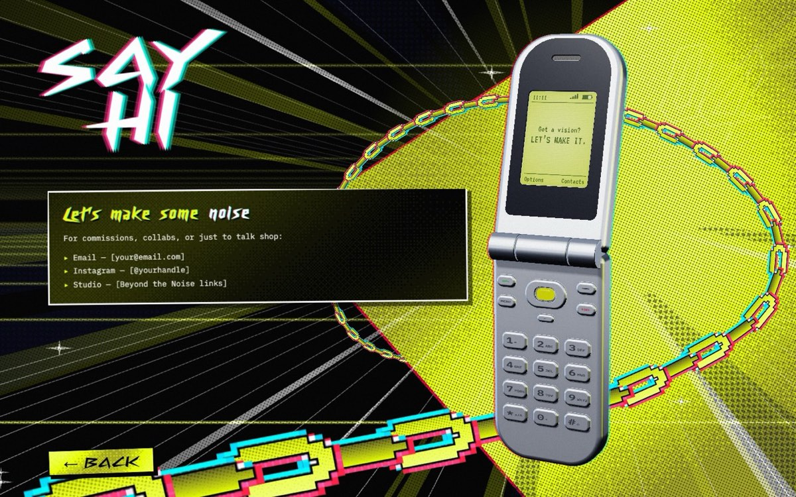<figcaption><span class="tag">Round 1</span>Plain silver, a contact box beside it.</figcaption></figure>
      <figure>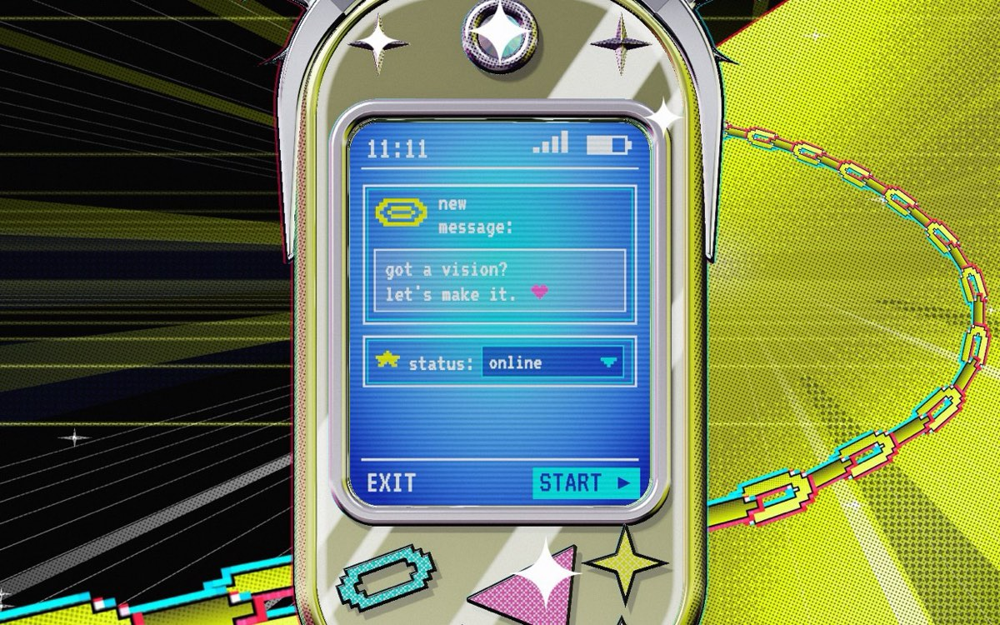<figcaption><span class="tag now">Round 27</span>Close up, its own screen asks <q>got a vision? let's make it.</q> Your answer goes to his inbox.</figcaption></figure>
    </div>
  </div>
  <div class="col section-body stack" style="margin-top:44px">
    <h3>Even the cursor</h3>
    <p>He wanted the pointer to have <q>its own personality and behaviour.</q> It's a pixel block with weight: it leans when you move it, swaps to a hand over anything clickable with a punch and a glint, and sinks like a key when you click. When you stop, it stops. No trail, because a trail would be the idle flicker he'd already cut.</p>
  </div>
  <div class="wide" style="margin-top:24px">
    <figure>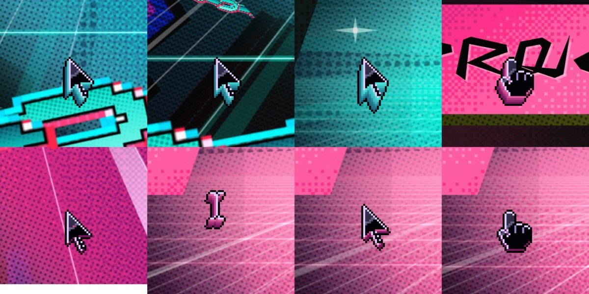<figcaption>The cursor's states. Its side takes each page's colour.</figcaption></figure>
  </div>

  <section id="his" class="col">
    <div class="ch">Chapter 7</div>
    <h2>Made of his own material</h2>
    <div class="section-body stack">
      <p>Almost nothing on the site is borrowed. The look comes from his logo video, every heading is set in his own typeface (Cyberway Riders), the photos and films in the computer are his, and the copy is in his voice.</p>
      <p>Twice he stopped the site from speaking as someone else. The first time it was the studio he works with:</p>
      <blockquote class="said">I don't want you to use BTN for everything. BTN is a separate brand that I work with, and this is my portfolio.<cite>2 Nov 2026</cite></blockquote>
      <p>The second time it was tone. The skill cards had taglines, and he called them <q>too cheesy.</q> They were rewritten as plain first-person lines, restless like the ABOUT plate:</p>
    </div>
    <div class="lines" style="margin-top:24px">
      <div class="line"><div class="was"><small>Before</small>Every frame earns its place or it goes.</div><div class="is"><small>Video editing</small>I lose whole nights in Resolve chasing one cut that hits right. Still my favourite place.</div></div>
      <div class="line"><div class="was"><small>Before</small>A tagline</div><div class="is"><small>Visual direction</small>I pick the colours, the light, the type, the mood. Then I break it all and try again until it feels like mine.</div></div>
      <div class="line"><div class="was"><small>Before</small>A tagline</div><div class="is"><small>Photography</small>I shoot what makes me stop and look twice, and I keep going until it stops feeling safe.</div></div>
    </div>
    <div class="section-body stack" style="margin-top:28px">
      <p>ABOUT went through three lives to get to something that felt like him: a Persona-style collage, then a <q>Have you seen this DIRECTOR?</q> poster, then a handycam projecting him into its own beam of light. The camera is the right metaphor for someone who shoots, edits and directs: he's the subject and the one behind the lens.</p>
    </div>
  </section>
  <div class="wide" style="margin-top:28px">
    <div class="trio">
      <figure>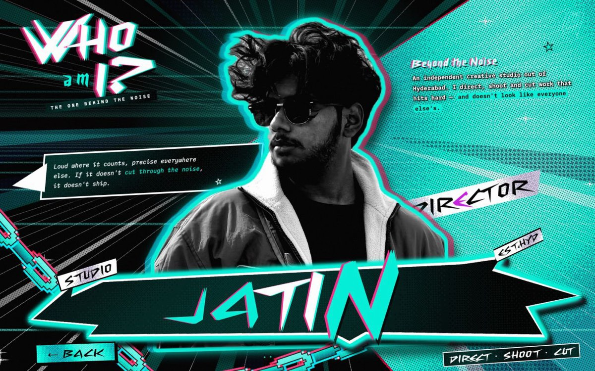<figcaption><span class="tag">Oct</span>The Persona collage.</figcaption></figure>
      <figure>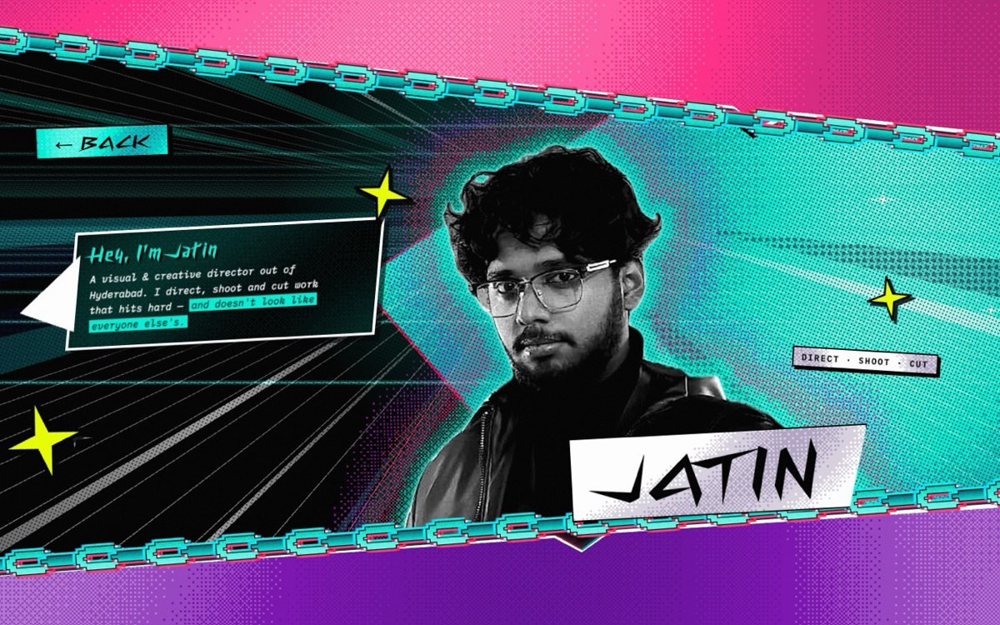<figcaption><span class="tag">Late Oct</span>The poster, banners edged in chain.</figcaption></figure>
      <figure><figcaption><span class="tag now">Now</span>The handycam. His quote sits in the beam.</figcaption></figure>
    </div>
  </div>

  <section id="how" class="col">
    <div class="ch">Chapter 8</div>
    <h2>How he works</h2>
    <div class="section-body stack">
      <p>Reading back through more than a hundred rounds of notes, the same habits show up again and again. Together they're his process.</p>
    </div>
    <div class="habits" style="margin-top:24px">
      <div class="habit"><h3>He starts from a reference</h3><p>Almost every piece began with something he brought: pop-art title intros, a rendered retro computer, Y2K deco phones, a psychedelic eye, a camcorder projecting light. Then the ask is to take it apart and rebuild it in his language.</p><p class="ex">“analyze every detail of the reference and pay attention to them”</p></div>
      <div class="habit"><h3>He draws on the screen</h3><p>When words aren't enough he marks up a screenshot: red lines for a chain's path, green for a hinge's shape, a box where a button should go, scribbles over an area that should be filled.</p><p class="ex">“I drew with a green line so it can be easier for you to follow”</p></div>
      <div class="habit"><h3>He decides by seeing</h3><p>He'll ask for something, watch it, and change his mind. Text on the ABOUT banners went in and out twice. Grabbing the camera was added, then removed. He doesn't treat that as wasted work. Seeing it is how he finds out.</p><p class="ex">“actually just remove the grabbing and go back to the previous state”</p></div>
      <div class="habit"><h3>He notices the small things</h3><p>A faint dashed box around a sticker, a single frame of gap after a beam, CLICK ME reading wrong in a display face, a chain link that spikes past a letter. Small flaws break the illusion, so they get fixed.</p><p class="ex">“why is there extra chain spiking up around the logo?”</p></div>
      <div class="habit"><h3>He pushes for more, then pulls back</h3><p>The living wedge went <q>not too harsh</q>, then <q>too subtle, more motion and contrast</q>, then <q>wider, flowy, add a small dither.</q> He finds the edge by going past it.</p><p class="ex">“not too heavy, not too subtle”</p></div>
      <div class="habit"><h3>He keeps it simple to use</h3><p>For all the noise on screen, the controls stay simple. One BACK button, top-left on every page. Hints that say TAP on a phone and CLICK on a laptop. No EXIT, no second way out.</p><p class="ex">“that's better and simple”</p></div>
    </div>
  </section>

  <section id="visitor" class="col">
    <div class="ch">Chapter 9</div>
    <h2>Built for the person on the other side</h2>
    <div class="section-body stack">
      <p>Loud doesn't have to mean hard to use. Twice before launch he had five simulated first-time visitors walk the site: an impatient skimmer, a skeptical recruiter, someone on a phone with slow 3G, a non-native English reader and someone trying to break it. Each went from the intro to seeing one of his photos full size or sending him a message, and every snag was fixed before they went back in.</p>
      <p>What came out of it: the browser's Back button climbs the computer one level at a time, presses during an entrance are kept instead of thrown away, the words change for touch screens, and the contact chat always ends somewhere real, with your message in his inbox.</p>
      <p>The world is loud so the work feels alive. The controls are plain so nobody gets lost on the way to it.</p>
    </div>
  </section>

  <section id="now" class="col">
    <div class="ch">Chapter 10</div>
    <h2>Where it stands</h2>
    <div class="section-body stack">
      <p>The site went live on 8 November at <a href="https://justjatin.thotahub.in" target="_blank" rel="noopener">justjatin.thotahub.in</a>, replacing the shorter version he'd built for a Vogue application, which went straight to his work. Every menu screen is finished. What's left is performance work so the heavier screens run smoothly on more machines, and a few pieces he's still adding: his exported logo in place of the font version, and material for the BTN folder.</p>
      <p>The site works the way he describes himself. It starts held back, it waits for a push, and when it breaks loose it doesn't hold back.</p>
    </div>
    <div class="end">
      <blockquote class="said">I'd rather burn out chasing what I love than fade away doing what I don't.<cite>Jatin</cite></blockquote>
      <p class="foot">Sources: his notes across 102 journal entries and 316 snapshot sets, 24 Oct – 9 Nov 2026. The full round-by-round log is in the project's journal (docs/process/JOURNAL.md).</p>
    </div>
  </section>
</main>
